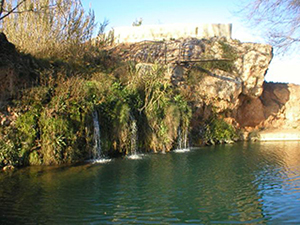

El Gorgo Catalán, pequeño lago rodeado de árboles cuyas aguas proceden del manantial de la Fuente Negra. El lugar acondicionado para el baño dispone de un trampolín donde quien guste puede lanzarse a las profundidades de sus aguas. Muy próximo a este lugar se encuentra el río de Anna al cual podemos descender siguiendo el sendero local señalizado.